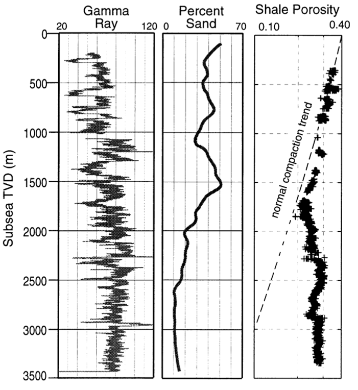

Next: 1.8 WP8: Hydraulic Fracturing Up: 1. Weekly Projects Previous: 1.6 WP6: Rock Failure Contents
The following data set contains well-logging measurements of porosity of a mudrock as a function of depth (Eugene Island – offshore Louisiana):
 |
 = 0.465 psi/ft.
= 0.465 psi/ft.


 as a function of depth.
as a function of depth.
 and actual
and actual  as a function of depth (y-axis)
as a function of depth (y-axis)
Write a script that simulates a (axisymmetric) triaxial loading test for a mudrock with the following properties:
 = 1 MPa;
= 1 MPa;
 = 250 [kPa]
= 250 [kPa]

 = 0.25;
= 0.25;
 = 0.05;
= 0.05;
 = 1.15;
= 1.15;
The initial state of stress is  = 200 kPa;
= 200 kPa;  = 0 kPa. Load the sample until the critical state.
= 0 kPa. Load the sample until the critical state.
VS . Plot the initial yield surface and the final yield surface. Is there hardening or softening?
as a function of
. Why does it approximate an asymptotic value?
 as a function of (with in logarithmic scale). Why is there a clear change of slope?
as a function of (with in logarithmic scale). Why is there a clear change of slope?
Equations:
Incremental elastic deformations:

Incremental plastic deformation:
![$\left[ \begin{matrix}
d\varepsilon_p^p \\
d\varepsilon_q^p\\
\end{matrix} \...
...trix} \right]
\left[ \begin{matrix}
dp^\prime \\
dq \\
\end{matrix}\right] $](img101.svg)
where
 is the specific volume,
is the specific volume,  , and
, and
 .
.
The incremental change of the yield surface is:
 .
.